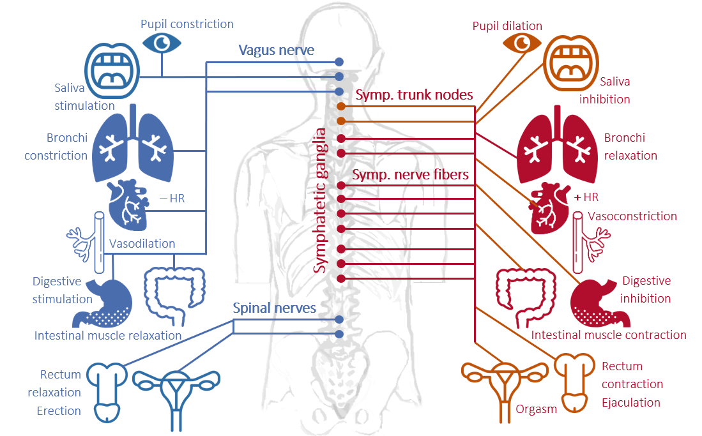

Psychophysiology of the stress response
Stress is a complex and multifaceted phenomenon, involving multiple dimensions placed on different epistemological levels, and investigated by different disciplines (e.g., physics, biology, medicine, psychology). In turn, stress is influenced by several factors of various nature (e.g., biochemical, genetic, psychosocial) with a transitory (e.g., exam), chronic (e.g., war), and even dispositional time course (e.g., anxiety disorder), and it is associated with individual health & well-being.
Historical origins of stress research
The term ‘stress’ comes from the Latin ‘strictus’ (narrow), initially used to describe an elastic body’s response (pressure changes called ‘strain’, i.e., tension) to an external force. Then, the French physiologist Claude Bernard (1813-1878) started using the term “estresse” to characterize the body’s defence reactions to strong external stimulations. Following Berdard’s work, the North American physiologist Walter Cannon (1871-1045) identified a global response through which the Autonomic Nervous System (ANS) reacts to threatening stimuli in order to maintain homeostasis (the normal physiological balance of the body): the Alarm Reaction.

The Autonomic Nervous System (ASN) is a component of the peripheral nervous system that is traditionally thought to be involuntarily controlled as opposed to the somatic nervous system (although recent evidence highlighted the possibility to voluntarily control some of its components, e.g., using biofeedback). The ANS is composed by two branches, both innervating most of our organs and muscles:
the sympathetic nervous system, characterized by an overall activating function (e.g., phasic heart rate increase, increased muscle oxygenation) to prepare the body to action, that is to elicit the fight-or-flight response (i.e., the Alarm Reaction identified by Cannon)
the parasymphatetic nervous system, characterized by an overall inhibiting function (e.g., tonic heart rate decrease, increased oxygenation of internal organs promoting digestion), sometimes referred as the rest-and-digest system.
Following Cannon’s work, the Austrian endocrinologist Hans Selye (1907-1982) identified a nonspecific and gradual response to different adverse conditions observed in human subjects (e.g., cold, flu, amputation), and to different nocuous stimulations experimentally inflicted to laboratory rats (e.g., cold temperature, surgical injuries, excessive physical exercise, toxic substances). The General Adaptation Syndrome was defined as «the sum of all nonspecific, systemic reactions of the body which ensue upon long-continued exposure to stress» [1], articulated over three stages:
Alarm reaction (from Cannon’s work), characterized as a short-term adaptive response resulting in increased energy availability and immune defense (fight-or-flight)
Resistance, that is when the exposure is prolonged, the response can be sustained over time, and the organism increasingly adapts
Exhaustion: last stage characterizing exposures prolonged for several weeks/months, resulting in severe damage to the body (e.g., intestinal ulcers) and increased vulnerability to both the original and other stressful stimuli, with higher chance of illness and death

Psychoneuroendocrinology of the stress response
Selye and Cannon were the first acknowledging the multilevel nature of the stress response, involving complex interactions between the nervous and the endocrine systems, and with implications at the immune level. While such complexity resulted in a degree of conceptual ambiguity and disagreement across different (sub)disciplines [2], it also contributed to the definition of more holistic approaches to its investigation. One of these approaches is that of the Psycho-Neuro-Endocrino-Immunology (what a long name! But we can call it PNEI), that is the study of the interactions between behavioral (e.g., fight-or-flight response), neural (e.g., ANS, prefrontal cortex), endocrine (e.g., cortisol), and immune systems (e.g., proinflammatory cytokines).